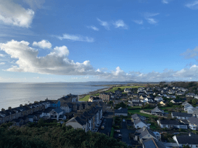
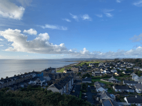
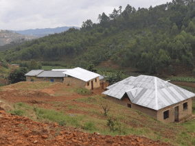
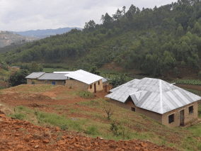
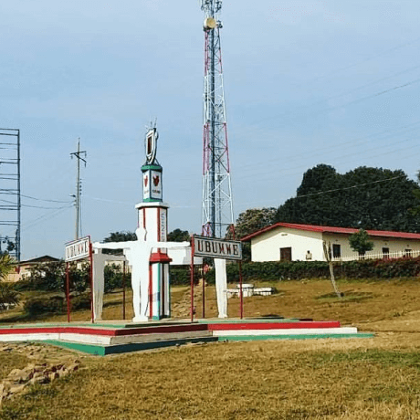

Conoce un poco mejor los lugares de los que proceden tus colegas en línea
Todo ser humano es un artista, un ser de la libertad, llamado a participar en la transformación y reforma de las condiciones, el pensamiento y las estructuras que conforman e influyen en nuestras vidas.
 



 

-
Kiev, Ucrania
Artista
Natalia Dolgushina, productora de contenidos
Kiev (o Kyiv), la capital de Ucrania, es una gran ciudad situada a orillas del río Dniéper. Por supuesto, nadie en su sano juicio se bañaría en el río, a menos que se haya criado aquí, en cuyo caso probablemente lo haya intentado en algún momento. Los veranos son calurosos aquí, y los inviernos con fuertes corrientes de aire, pero el otoño y la primavera son absolutamente increíbles.
La ciudad en sí es una mezcla de arquitectura prerrevolucionaria, de posguerra y soviética, toda ella salpicada de balcones modificados. Si te encuentras en la orilla derecha del Dniéper, el paisaje es difícil de atravesar para las personas en bicicleta y las que llevan tacones. Sin embargo, la orilla izquierda es considerada mucho menos interesante y prestigiosa, incluso por la gente que vive en las afueras de la derecha.
-
Criccieth, Gales
Artista
Steffan Warren, editor principal
Kseniya Glagoleva, directora del proyecto

La ruina medieval del castillo de Criccieth domina la ciudad desde una roca que se adentra en el mar. Se cree que fue construido por Llewelyn el Grande en el siglo XIII. Unos 900 años después, la autodenominada *Perla de Gales a orillas de Snowdonia* se ha convertido en un popular destino turístico durante los meses de verano.
A poca distancia del castillo, se puede disfrutar del mejor helado del mundo en Cadwalader's, cuyo ingrediente secreto se rumorea que son las algas de la zona. Otro reclamo a la fama es el hecho de que Criccieth ganó el premio *Wales in Bloom* durante cinco años consecutivos por sus espectaculares exhibiciones florales alrededor de la ciudad. También fue el hogar de David Lloyd George, el único galés que ocupó el cargo de Primer Ministro del Reino Unido.
-
Berea, Estados Unidos
Artista
Travis Turner, autor y editor

Berea es una pequeña ciudad situada en la parte central de Kentucky. La ciudad está rodeada de hermosos bosques y campos. Es conocida como la capital del arte y la artesanía del estado, y los visitantes encontrarán muchas oportunidades de compra: tiendas con joyas hechas a mano, velas, artículos de madera, galerías, estudios de vidrio y mucho más. La ciudad celebra cada año un festival en el que se festeja el "spoonbread", un plato local hecho con pan de maíz y servido con una cuchara de madera.
Sin embargo, es probablemente más conocido por la universidad local Berea College se fundó en 1855 y fue la primera universidad del sur de EE.UU. en estar integrada racialmente, así como la primera en ser coeducativa. De manera singular, no cobra matrícula: todos los estudiantes reciben una beca de matrícula completa.
-
Muramvya, Burundi
Artista
Grevisse Kenguruka, editor técnico
Muramvya es una de las 18 provincias de Burundi. En la época del reino, Muramvya era la capital real y en 2007, por su cultura y paisaje natural, fue incluida en la lista indicativa del Patrimonio Cultural Mundial de la UNESCO. Está situada en el centro de Burundi, entre las capitales política y económica del país..
El clima es más bien frío por la noche, pero durante el día, creerás que estás en el paraíso. A 2.665 metros sobre el nivel del mar, el monte Teza es uno de los lugares más fríos de la provincia. Pero esa brisa fresca permite el crecimiento de una de las mayores plantaciones de té y café del país, que constituyen la mayor parte de las exportaciones de Burundi.
El Parque Nacional de Kibira, una de las mayores reservas de fauna silvestre para simios, se extiende por cuatro provincias, incluida Muramvya. Este Parque Nacional se encuentra en el vértice de las hermosas montañas de la divisoria Congo-Nilo, que oscilan entre los 1.550 y los 2.660 metros de altitud. Está lleno de hermosa vegetación, y es una fuente para los diversos ríos y arroyos que proporcionan agua en todo el país
-
Caracas, Venezuela
Artista
Jesús Meola, editor
Caracas, la capital de Venezuela, es un centro cultural y comercial situado en un valle montañoso del norte del país. El líder independentista Simón Bolívar está enterrado en el Panteón Nacional de Venezuela, construido en el casco antiguo de la ciudad en el siglo XIX. La catedral de Caracas es un monumento que data del siglo XVII. Las torres gemelas del Parque Central tienen una altura de 225 m y son un símbolo de la ciudad.
De igual manera Caracas es considerada la "Capital Mundial del Brutalismo" por la cantidad y calidad única de edificios sobresalientes que contribuyeron de forma universal al desarrollo y difusión de este estilo arquitectónico.